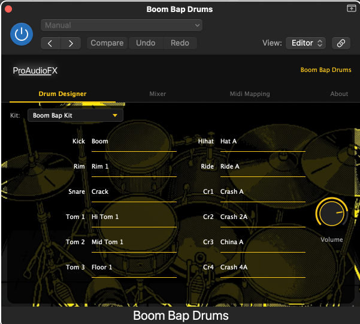
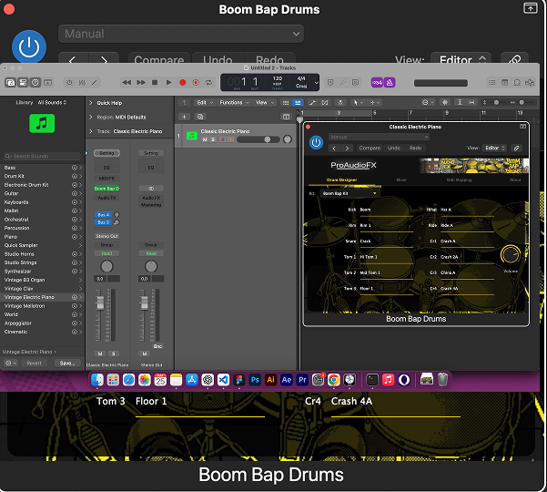
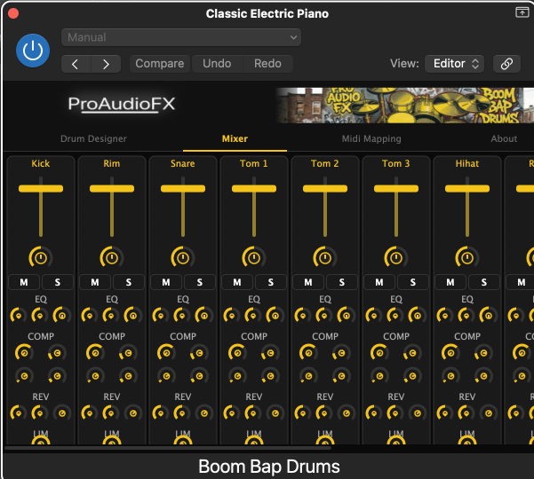
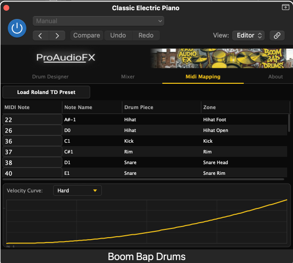

Boom Bap Drums
This plugin is a sample-based audio modeling drum instrument designed for seamless compatibility with V-Drums. Simply connect your electronic drum kit and start playing boom bap, hip-hop, and lo-fi style grooves instantly.
It includes 4 carefully crafted presets:
- Boom Bap
- Lo-Fi
- Hip-Hop
- Old School
The plugin features its own built-in DSP effects, including a detailed mixer, EQ, compressor, and reverb, giving you full control over your sound.
You can fully customize the MIDI mapping, edit parameters, and use all drum components freely to match your playing style and setup.
Simple to use, yet capable of delivering high-quality, professional drum sounds.
No sign-up or login required.
Best of all: it's completely free.


Works Inside Your DAW
You can run it directly inside your DAW. Load it as a VST3 or AU instrument and start playing immediately — no extra setup needed.

Built-in Mixer & DSP Effects
The plugin has a detailed built-in mixer. You can adjust sounds freely and apply the plugin's own DSP effects — EQ, compressor, and reverb — giving you full control over your sound without any external plugins.

Compatible with All E-Drums
Compatible with all E-Drums. Freely customize the MIDI mapping to match your electronic drum kit and play hip-hop, boom bap, and lo-fi style grooves exactly the way you want.
Download Boom Bap Drums — Free
No sign-up required. macOS · VST3 + AU · Logic Pro · Ableton Live · Reaper
⬇ Download — Free